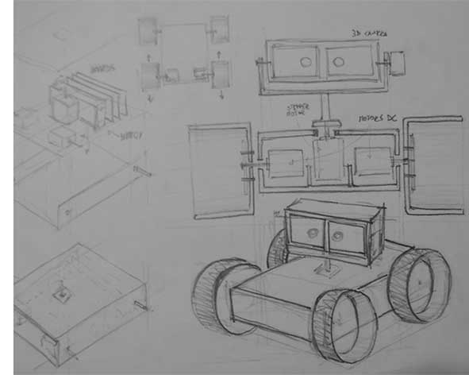
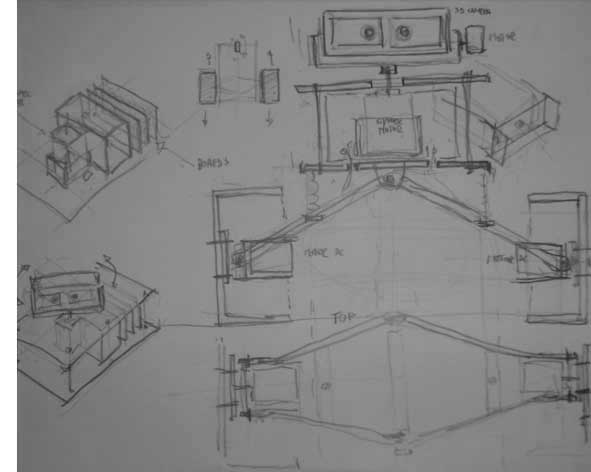
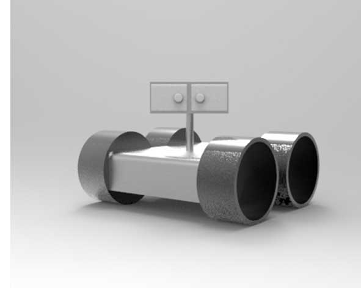
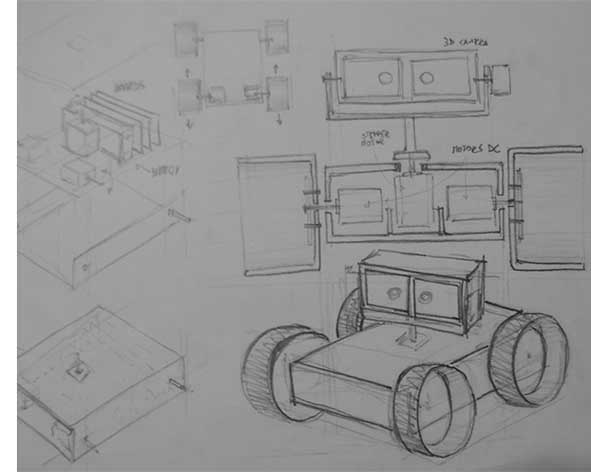
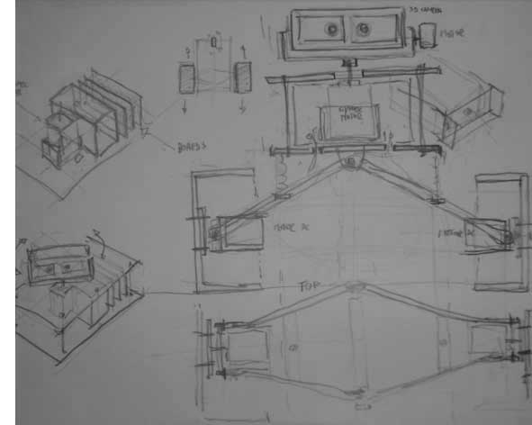
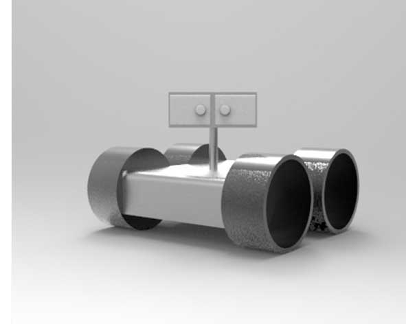

Week 1
Website and Final Project Proposal
My Website
In the first week of the fab academy we were asked to create a personal website.
HTML5-CSS:
it was a bit like learning a new language!
This was the first time I have come into contact with website coding, but I was very excited to begin development of a personal website.
I started studing tutorial of htlm5 and css. Then my first step to create an web site was modify a Bootstrap template using Sublime Text Editor and Dreamweaver to customize and change aspects within the design and the code of the site. Maybe I chose a too complex theme to start, but I through this had a clean appearance that would exhibit my work well.
Git hub and the weekly assignment "push"
GitHub is a web-based Git repository hosting service. Each week we will do the local "push" of our assignment, in this way the Fablab local tutors will be able to control the web pages and the work done during the week by students.
The tutor then will be in charge of the global push to all students in the lab.
This system, as well as being helpful to the student, allows to simplify the data traffic that otherwise could block the global system of Fab Academy.
Programs: Sublime Text, Dreamweaver.
Template: Bootstrap "Agency" theme.
 





FINAL PROJECT PROPOSAL
In the first week of the fab academy we were also asked to propose a final project.
The IDEA: “REMOTE SYSTEM TRAVELLING”
Everyone wants a “Ticket to Anywhere”. I know, the best part of travel is the “travel” itself, but, in some particular conditions, the possibility to visit and live in “remote” new places is the best experience of an entire life. My proposal concern the fabrication of a robot which can be remote controlled. The second step will be to equip it with a FPV system (FIRST PERSON VIEW). In my utopic vision the user will be abil to travel anywhere and live an interactive experience.
Inspirational References
A list of references where I take some of my inspirations to make this experiment and for further research:
- Henry Evans and Chad Jenkins: meet the robots for humanity TED 2013
“All of us have disabilities in one form or another. For example, if either of us wants to go 60 miles an hour, both of us will need an assistive device called a car. Your disability doesn't make you any less of a person, and neither does mine.” H. Evans
Possible materials, components
- Materials:
Wood;
Organic Plastic;
Acrylics;
3D print board cases.
- Hardware:
Bords;
2 DC Motors;
2 Stepper Motors;
Remote controller;
3d camera system;
HMD (head-mounted display);
Other Components: Power Source, RGB Leds, Electrical wires, Electronic components
- Software: Open softwares
Applications
During Fab Academy I will do the first version of robot. hopefully this prototype will help me for further investigations about this project. I think that can be used as many proposes:
- Remote Travelling: travel and visit remote places
- Mapping tool: creation of 3dimentional Models
- Science Research: recollection data, by equiping it with sensors
- Interactive Sanitary Therapy: psychological therapy; Support to other medical therapy
- Interactive Education
- Security/Surveillance
- And much more...